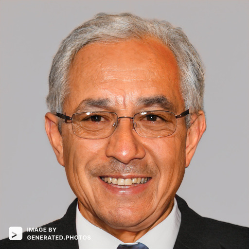
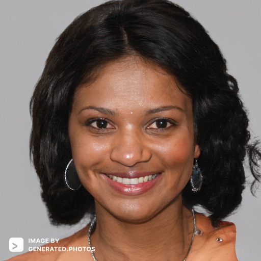

Target Audience
The target audience of Riversdalecc.org is described below:
- Who: Business owners of all backgrounds and scale.
- Age: 18 - 100.
- Income: $15,000 and above.
- Motivation: Entrepreneurial, Results-oriented, Deliberate, Hardworking, Leadership.
Personas
Greg C. Madeson
- Occupation: Founder of Madison Group Co.
- Education: Bsc Business Administration from Brigham Young University Idaho. Masters in Accounting from the University of Idaho.
- Age: 56 years old.
- Goals and motivation for using the site: Network with other business owners, have a voice in my community, get updates about the Business climate in my community, mentor upcoming business entreprenuers.
- Social: Riverdale community leader, loves to vacation with family every holiday season. Frequent speaker at Madison Mentorship events.
- Quote: "Organized community in business is a great force for econmic growth"
Ruth C. Adesanya
- Occupation: New Startup Owner Adesanya Technology Inc.
- Education: Bsc Computer Science with Minor in business from Havard University
- Age: 29
- Goals and motivation for using the site:
- Social: Women programmers leader, startup meetings and events, enjoys traveling around the world.
- Quote: "Women shouldn't be afraid to put themselves forward"